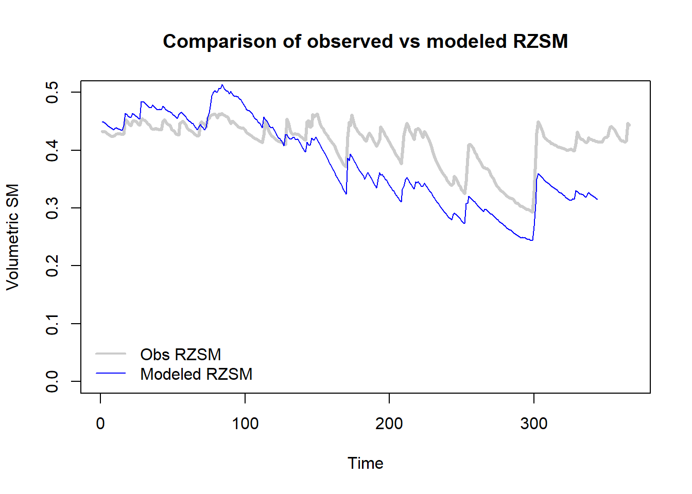
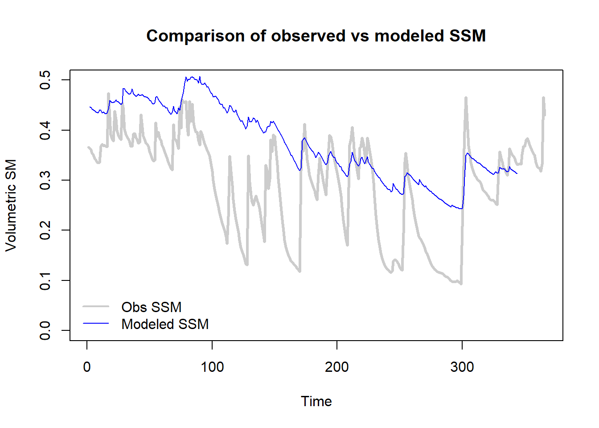
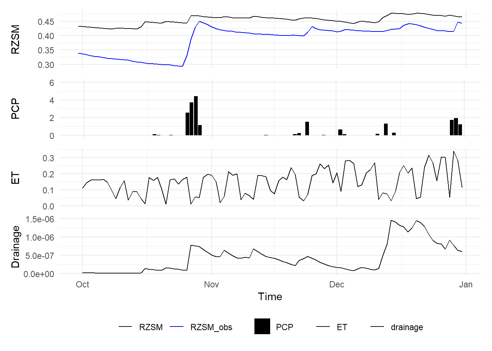

library(zoo)
# Yearly data from the sample station
CRNdat = read.csv(url("https://www.ncei.noaa.gov/pub/data/uscrn/products/daily01/2020/CRND0103-2020-OK_Stillwater_2_W.txt"), header=FALSE,sep="")
# Data headers
headers=read.csv(url("https://www.ncei.noaa.gov/pub/data/uscrn/products/daily01/headers.txt"), header=FALSE,sep="")
# Column names as headers from the text file
colnames(CRNdat)=headers[2,1:ncol(CRNdat)]
# Replace fill values with NA
CRNdat[CRNdat == -9999]=NA
CRNdat[CRNdat == -99]=NA
CRNdat[CRNdat == 999]=NA
# Replace NA precipitation values with 0
CRNdat$P_DAILY_CALC[is.na(CRNdat$P_DAILY_CALC)]=0Sample Meteorological Dataset from a USCRN Site
We will develop a 2-layer simple soil water balance modeling for simulating 1-D fluxes in the rootzone using USCRN station at Stillwater, OK, USA as an example. Let us extract sample data from the sample station for 2021.
Simple Soil Water Balance Model
# PET estimation using Priestley-Taylor method
PT_PET=function(Tmean,Rad,alpha){
lambdaV= 2260 # Latent heat of vaporization
rhoW= 1000 # Density of water
gamma= 4.95*1e-4 # Psychrometric constant
deltaVal=rep(0, length(Tmean)) # Create empty array
# When Tmean<0
deltaVal[Tmean<0]=0.3405*exp(0.0642*Tmean[Tmean<0])
# When Tmean>=0
deltaVal[Tmean>=0]=0.3221*exp(0.0803*((Tmean[Tmean>=0])^0.8876))
# Priestley-Taylor equation
PETval=(alpha/(lambdaV*rhoW))*(deltaVal/(deltaVal+gamma))*Rad
PETval[PETval<0]=0
return(PETval) #estimate in m
}
# Observed meteorological forcings
Rad=CRNdat$SOLARAD_DAILY*1000 # (as 1 MJ= 1000 KJ)
Tmean=CRNdat$T_DAILY_MEAN
PCP=CRNdat$P_DAILY_CALC/10 # convert units from mm to cm
# Model parameters
alpha=0.8 # Priestley-Taylor correction factor
por=0.6 # Porosity
RZSMfc=0.55 # RZ Field capacity
RZSMwp=0.12 # RZ Wilting point
EFmx=0.50 # Max Evaporative fraction
z=100 # Profile depth (cm)
b=5 # Power coefficient of the SM-drainage curve
Ks=250 # Saturated hydraulic conductivity
D= 0.5 # Diffusivity coefficient
buffer=0.01*(por-RZSMwp) # 1% buffer to decrease sensitivity to sensor noise
#~~~ Simple Soil Water Balance Model
RZSM= SSM= drainage= ET= PET= runoff=c() # Empty arrays to store data
RZSM[1]=0.45 # Initial soil moisture state
for (t in 2:length(PCP)){
# Update RZSM based on precipitation
RZSM[t]= (PCP[t]+(RZSM[t-1]*z))/z
# Runoff: only if RZSM > FC. Update RZSM to FC after runoff
runoff[t]=ifelse(RZSM[t]>RZSMfc,(RZSM[t]-RZSMfc)*z,0)
RZSM[t]=ifelse(runoff[t]>0, RZSMfc,RZSM[t])
# Estimate ET based on PET and RZSM state
PET[t]=100*PT_PET(Tmean[t],Rad[t],alpha) #PET in cm
RZSMc=(RZSMfc+RZSMwp)/2 # RZ Critical point
ET[t]=max(0,ifelse(RZSM[t]>RZSMc,
PET[t]*(EFmx/(RZSMc-RZSMwp))*(RZSMc-RZSMwp),
PET[t]*(EFmx/(RZSMc-RZSMwp))*(RZSM[t]-RZSMwp)))
# Update RZSM for the next iteration
RZSM[t]=(z*RZSM[t]-ET[t])/z
# Deep drainage based on soil moisture state. Deep drainage continues till CP
drainage[t]=Ks*(pmax(0,RZSM[t]-RZSMc))^b
# Update RZSM after drainage
RZSM[t]=((RZSM[t]*z)-drainage[t])/z
SSM[t]=ifelse(RZSM[t]>(RZSM[t-1]+buffer),
min(RZSM[t],RZSM[t-1]),
(RZSM[t-1]+((RZSM[t]-RZSM[t-1])/D)))
}
# Weighted average of soil moisture at multiple depths to estimate RZSM
SMpdf=data.frame(SM5=na.approx(CRNdat$SOIL_MOISTURE_5_DAILY,na.rm = FALSE),
SM10=na.approx(CRNdat$SOIL_MOISTURE_10_DAILY,na.rm = FALSE),
SM20=na.approx(CRNdat$SOIL_MOISTURE_20_DAILY,na.rm = FALSE),
SM50=na.approx(CRNdat$SOIL_MOISTURE_50_DAILY,na.rm = FALSE),
SM100=na.approx(CRNdat$SOIL_MOISTURE_100_DAILY,na.rm = FALSE))
RZSM_obs=(SMpdf$SM5*(7.5-0)+ # 0- 7.5 cm depth
SMpdf$SM10*(15-7.5)+ # 7.5-15 cm depth
SMpdf$SM20*(35-15)+ # 15-35 cm depth
SMpdf$SM50*(75-35)+ # 35-75 cm depth
SMpdf$SM100*(100-75))/100 # 75-100 cm depth
# Plotting estimated versus observed RZSM
{plot(RZSM_obs, type="l", col="gray80", lwd=3,
ylab="Volumetric SM", xlab="Time",
main="Comparison of observed vs modeled RZSM", ylim=c(0,0.5))
lines(RZSM, col="blue")
legend(x = "bottomleft",
legend = c("Obs RZSM", "Modeled RZSM"),
col = c("gray80","blue"),
lwd = c(2,1), bty = "n")
}
{plot(SMpdf$SM5, type="l", col="gray80", lwd=3,
ylab="Volumetric SM", xlab="Time",
main="Comparison of observed vs modeled SSM", ylim=c(0,0.5))
lines(SSM, col="blue")
legend(x = "bottomleft",
legend = c("Obs SSM", "Modeled SSM"),
col = c("gray80","blue"),
lwd = c(2,1), bty = "n")
}
Optimizing Soil Water Balance Model Parameters
# Set condition for model initiation
ini_condition=RZSM_obs[1]
# Data frame with Met forcings
forcing=data.frame(Rad=CRNdat$SOLARAD_DAILY*1000, # in KJ
Tmean=CRNdat$T_DAILY_MEAN, # in deg C
PCP=CRNdat$P_DAILY_CALC/10) # in cm
# Split 75% of data for model training
forcing_trn=forcing[1:round(nrow(forcing)*.75),]
forcing_tst=forcing[round(nrow(forcing)*.75):nrow(forcing),]
# Soil Water balance model in the form of a function
SWB_model=function(ParIn,ini_condition,forcing){
# Input parameters
alpha = ParIn[1]
por = ParIn[2]
RZSMfc = ParIn[3]
RZSMwp = ParIn[4]
EFmx = ParIn[5]
z = ParIn[6]
b = ParIn[7]
Ks = ParIn[8]
D = ParIn[9]
# 1% buffer to decrease sensitivity to sensor noise
buffer=0.01*(por-RZSMwp)
#~~~ Simple Soil Water Balance Model
RZSM= SSM= drainage= ET= PET= runoff=c() # Empty arrays to store data
RZSM[1]= ini_condition # Initial soil moisture state
for (t in 2:nrow(forcing)){
# Update RZSM based on precipitation
RZSM[t]= (PCP[t]+(RZSM[t-1]*z))/z
# Runoff: only if RZSM > FC. Update RZSM to FC after runoff
runoff[t]=ifelse(RZSM[t]>RZSMfc,(RZSM[t]-RZSMfc)*z,0)
RZSM[t]=ifelse(runoff[t]>0, RZSMfc,RZSM[t])
# Estimate ET based on PET and RZSM state
PET[t]=100*PT_PET(Tmean[t],Rad[t],alpha) #PET in cm
RZSMc=(RZSMfc+RZSMwp)/2 # RZ Critical point
ET[t]=max(0,ifelse(RZSM[t]>RZSMc,
PET[t]*(EFmx/(RZSMc-RZSMwp))*(RZSMc-RZSMwp),
PET[t]*(EFmx/(RZSMc-RZSMwp))*(RZSM[t]-RZSMwp)))
# Update RZSM for the next iteration
RZSM[t]=(z*RZSM[t]-ET[t])/z
# Deep drainage based on soil moisture state.
# Deep drainage continues till SM reached critical point
drainage[t]=Ks*(pmax(0,RZSM[t]-RZSMc))^b
# Update RZSM after drainage
RZSM[t]=((RZSM[t]*z)-drainage[t])/z
SSM[t]=ifelse(RZSM[t]>(RZSM[t-1]+buffer),
min(RZSM[t],RZSM[t-1]),
(RZSM[t-1]+((RZSM[t]-RZSM[t-1])/D)))
}
return(cbind(SSM,RZSM,drainage,ET,runoff,PET))
}
# Function to calculate error in the simulated RZSM vis-a-vis obs RZSM
error_fun=function(par){
# We use estimated parameters for this iteration in the SWB model
# Notice we use only training part of the data as forcing
sim_out=SWB_model(par,ini_condition,forcing=forcing_trn)
err=hydroGOF::rmse(RZSM_obs[1:round(nrow(forcing)*.75)],
sim_out[,2]) # Simulation RMSE
names(par)=c("alpha","por","RZSMfc","RZSMwp","EFmx","z","b","Ks","D")
por=par[2]
RZSMfc=par[3]
RZSMwp=par[4]
# Penalized constraint violation
if(!(por>RZSMfc) | !(RZSMfc>RZSMwp)){
# If WP>PC>Porosity is not true, the function returns high errors
err=10e3
}
return(err)
}
# Use SCE Optim to optimize the SWB model parameters
library(hydromad)
set.seed(90);ParOut=hydromad::SCEoptim(error_fun,
c(0.8, 0.6, 0.55, 0.12,
0.5, 100, 5, 250, 0.5), # Initial values of params
lower = c(0.5,0.4,0.3, 0.05,
0.4,80,1.2,50,0.1), # Lower values of params
upper = c(2,0.6,0.55,0.3,
1,120,10,1000,1), # Upper values of params
control = list(reltol = 1e-3,tolsteps=7))
names(ParOut$par)=c("alpha","por","RZSMfc","RZSMwp",
"EFmx","z","b","Ks","D");ParOut$par alpha por RZSMfc RZSMwp EFmx z
0.6244726 0.5828189 0.4778476 0.2429896 0.5225690 120.0000000
b Ks D
8.1487462 56.6855222 0.4412279 Evaluating model output
.
# Apply the SWB model on test dataset
optimOut=SWB_model(ParOut$par,ini_condition,forcing=forcing_tst)
# Convert the output array to a data frame for easy plotting
optimOut=data.frame(optimOut)
# Add time and precipitation to the output df so it can be plotted
optimOut$PCP=forcing$PCP[round(nrow(forcing)*.75):nrow(forcing)]
optimOut$time=as.Date(
as.character(CRNdat$LST_DATE[round(nrow(forcing)*.75):
nrow(forcing)]),
format="%Y%m%d")
optimOut$RZSM_obs=RZSM_obs[round(nrow(forcing)*.75):nrow(forcing)]
library(ggplot2)
library(patchwork)
# Plot for observed and modeled RZSM
p_RZSM=ggplot(optimOut) +
geom_line(aes(x = time, y = RZSM, color = "RZSM"))+
geom_line(aes(x = time, y = RZSM_obs, color = "RZSM_obs"))+
scale_y_continuous( name = "RZSM")+
labs(x = "Time") +
theme_minimal() +
scale_color_manual(values = c("gray8","blue"))+
theme(legend.title = element_blank())
# Plot for modeled ET
p_ET=ggplot(optimOut) +
geom_line(aes(x = time, y = ET, color = "ET"))+
scale_y_continuous( name = "ET")+
labs(x = "Time") +
theme_minimal() +
scale_color_manual(values = c("ET" = "gray8"))+
theme(legend.title = element_blank())
# Plot for modeled drainage
p_drain=ggplot(optimOut) +
geom_line(aes(x = time, y = drainage, color = "drainage"))+
scale_y_continuous( name = "Drainage")+
labs(x = "Time") +
theme_minimal() +
scale_color_manual(values = c("drainage" = "gray8"))+
theme(legend.title = element_blank())
# Plot for observed precipitation
p_PCP=ggplot(optimOut) +
geom_bar(aes(x = time, y = PCP, fill = "PCP"),
stat = "identity")+
scale_y_continuous( name = "PCP",limits = c(0,6))+
labs(x = "Time") +
theme_minimal() +
scale_fill_manual(values = c("PCP" = "black"))+
theme(legend.title = element_blank())
# Combine all plots into a single window
library(patchwork)
p_RZSM/p_PCP/p_ET/p_drain+ # Plots one under the other
plot_layout(guides = "collect", # Collect common legends
axis_titles = "collect", # Collect common axis titles
axes="collect") & # Collect common axis labels
theme(legend.position='bottom') 